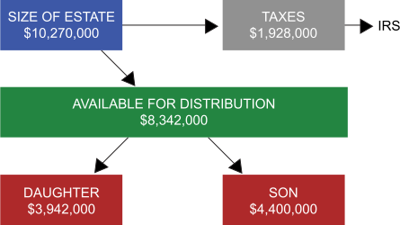
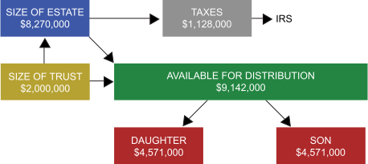

Of course, there is a lot of work and expense involved in setting up an Irrevocable Life Insurance Trust. Is it worth the trouble? The following example serves to illustrate just how significant this estate planning technique can be.
Mr. Brown is 58 years of age. His primary source of income is an office building that he built 15 years ago and has operated ever since. He is a widower, his former wife fully utilized the applicable exclusion amount in her estate, and he wishes to leave everything to his two children. He desires for his son to receive the office building and his daughter to receive the home, with the rest of the assets used to equalize their inheritance. His 2016 estate consists of the following assets:
| Home | $1,750,000 |
| Office Building | $4,400,000 |
| Investment Securities | $300,000 |
| Cash | $40,000 |
| Land | $1,620,000 |
| Personal Property | $160,000 |
| Total Estate | $8,270,000 |
Let’s assume Mr. Brown is making plans in 2016. If Mr. Brown were to die in 2016, and assuming no prior taxable transfers, the tax on his estate would be calculated as follows:
| Tentative tax | $3,253,800 | |
| Less applicable credit amount | (2,125,800) | |
| Estate tax | = | $1,128,000 |
Mr. Brown is faced with two problems. First, his estate lacks sufficient liquidity with which to pay the estate tax. Second, even if the taxes were not an issue, he lacks sufficient funds with which to equalize the children's inheritances.
In real life, Mr. Brown will have to consider the cost of the insurance policy itself and where the funds will come from. Will it be paid from current income or will it require use of some of his assets? However, to keep the illustration as simple as possible, we shall ignore the cost of the policy itself and all estate settlement expense other than the federal estate tax. Here is what happens if Mr. Brown purchases the policy himself.

Because the insurance policy was owned by Mr. Brown, and included in his estate, it increased his taxable estate by $2,000,000 and increased his estate tax by $800,000 (40% of $2,000,000). The end result is that he can pay the tax without selling either the business or the house, but does not have enough assets remaining to equalize the inheritance of his son and daughter. If his son receives the office building, then his daughter receives a smaller inheritance.
Here is what happens if the policy is purchased by and held in an Irrevocable Life Insurance Trust:

By simply making use of the irrevocable trust to keep the insurance out of his estate, the following can be accomplished: